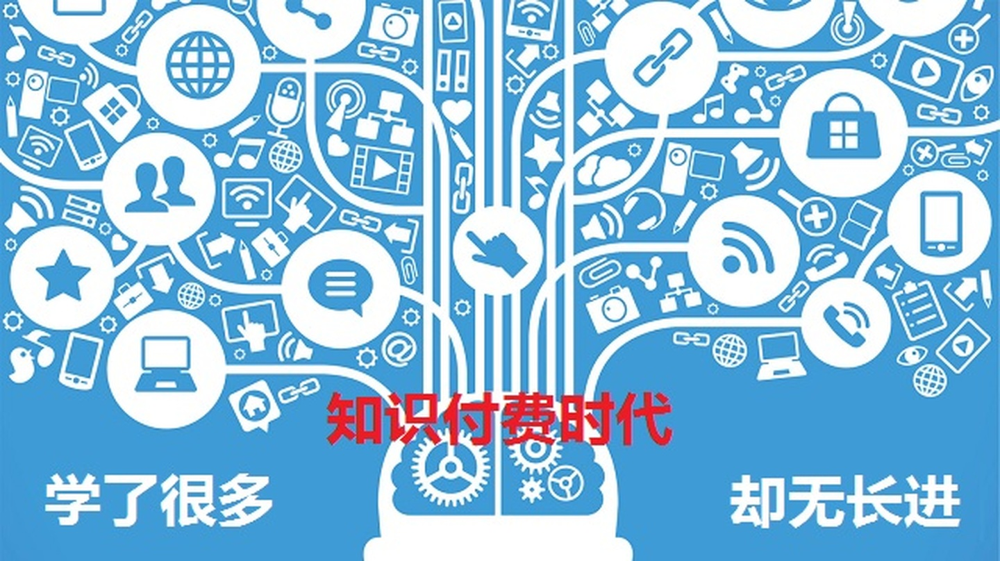
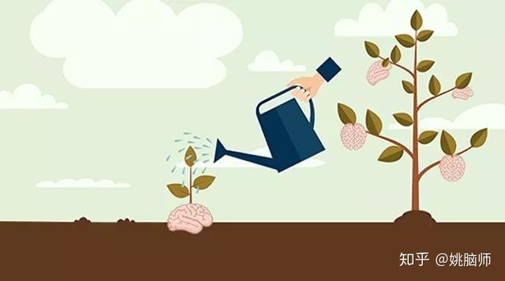
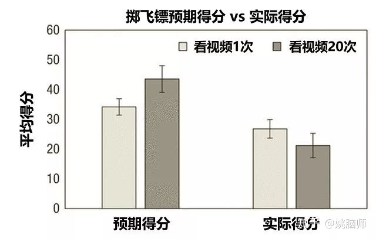
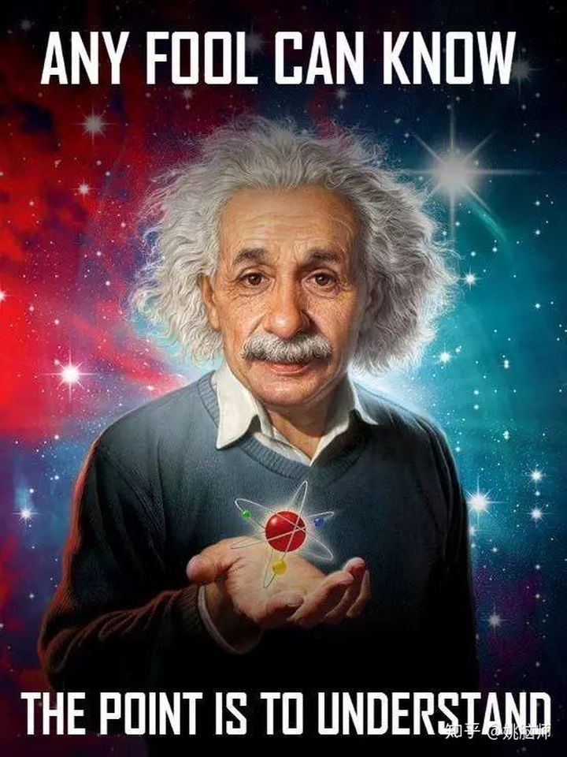
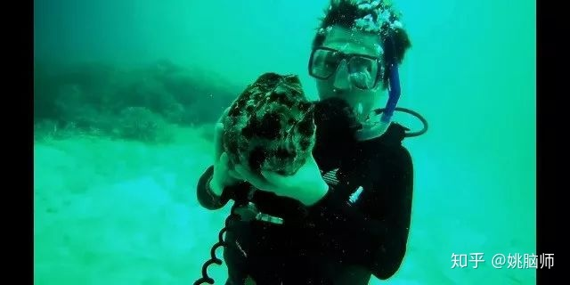
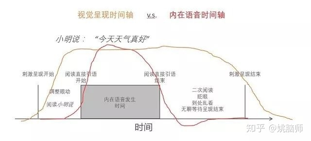

互联网时代，知识大爆炸。
足不出户，人人都可以上网轻松获取各种知识。
可乐鸡翅怎么做？下厨房上查一下。 单反摄影怎么拍？找个视频学几招。 老是拖延怎么办？在线课程来救急。
结果呢？
成功了吗？拍美了吗？效率了吗？
过多的知识使人感到焦虑。为了不被时代淘汰，一批又一批的有志青年既是“知识付费”，又是“碎片化学习”，一掷千金，争分夺秒，感觉自己“获得”了很多知识，结果回到现实生活却发现实际技能没有丝毫提高，渴望的改变和成功依然遥不可及。
明明不比别人少努力，钱也没少花，是资质不够，还是知识太水？
姚脑师认为，互联网时代的学习，学得太多，做得太少。恰恰正是“学习”知识剥夺了我们实践和内化知识的机会。
因为知识爆炸造成了时间的匮乏和注意力的分散。
不断灌输新的内容，便意味着没有时间实践和消化。
为什么知识付费时代的学习反而会减少实践的动力？？
为什么实践如此重要？
在信息大爆炸的时代，我们究竟该怎样学习？

一、越学越自信，真相很残酷
互联网时代，同种知识学得越多，学习者便会越“自信”。然而这种自信不光是一种假象，还会减少学习者去实践的需求和动力。
今年2月在《心理学科学》杂志上的一项研究表明反复观看教学视频会让人对自己的技能过度自信[1]。
研究人做了一系列实验，让被试者学习变魔术、掷飞镖、走月球步、和镜像绘画等新技能。
他们让一半的被试观看演示视频一次（知识曝光率低），而另一半则观看演示视频20次（知识曝光率高）。
看完视频后，研究人让被试者对自己的相关技能进行自评。他们发现视频看得越多，人们对自己的能力越自信。
研究人接着让被试实际尝试这些技能，并对其进行打分。他们发现看视频获得的自信只是一种幻觉。不论观看视频次数的多少，被试者在实际操作时的表现都并没有得到相应提高。

拿学习掷飞镖来说，学习者可以从演示视频里观察到掷镖人的手型、站姿等技巧。观察到的次数越多，大脑加工处理这些视觉信息的速度就会加快，因此会给人一种“已经学到了”的迷之自信。
然而掷飞镖看起来容易做起来难。它需要手眼间良好的协调，对力道的把握和对靶面距离的判断也必须通过亲身实践才可以准确把握。因此重复看演示视频，并不能实际提高掷飞镖的能力，反而会因为“我已经学到了”的盲目自信而忽略了练习和实践的步骤。
“已经懂了”和“真的会了”之间差的不是更多的表面学习，而是大量的刻意练习。
总之，缺乏实践，再多的学习也只能让我们达到 “肤浅的知道”的水平，并不能帮助我们真正学到知识、掌握技能。

二、为什么一定要实践？
姚脑师总结了三大原因：
a. 知识太抽象：归纳出来的知识不能还原技能的复杂细节。只有实践才能全面采集各种反馈来提高技能。
比如菜谱作为一种归纳出来的知识不能还原实际烹饪时的复杂细节。首先，菜谱里经常使用如“加适量酱油”，“爆炒”，“焖熟”等词汇，本身表述就很模糊，这就需要我们通过实践来摸索菜谱的具体含义。即使菜谱精确地告诉你“爆炒3分钟”，由于每个人所用厨具（例如导热性能如何）、食材（例如切块的大小）和环境（例如冬天和夏天）的不同，实际需要的火候和时间总是会有出入。这些微妙的差别也只能通过不断的实践试错才能习得——那些世界级的米其林大厨，哪一个不是身经百战？哪一个是刷刷下厨房，学学菜谱就能练成的？
再如深海潜水，都知道要平衡肺部内外以及耳膜内外的压力，但是下了水就会发现实际情况要复杂得多。姚脑师第一次下水时不知道耳膜内外压力平衡具体是什么感觉，几经尝试才明白要充气到耳膜“呲”地一声鼓出来才可以。另外，知识告诉我们上浮或下潜的时候要缓慢，但是具体要多慢只能通过实践摸索。姚脑师有一次上浮过程中明显感觉自己的肺要炸开了，才切身意识到上浮速度太快导致体内外压力差变化过快。这些生理上的反馈和对知识的具体阐述都只能通过实践来获得。

b. 知识不完整：越是全新的领域，越是没有现成的知识可循。只有实践才能产出新知识。
例如在前沿科研的过程中，我们常常会找不到现成的知识来解决新的问题。
当年姚脑师用脑成像技术寻找“内在语音”（inner speech）的时候就遇到了数据分析的难题[2]。在实验中，我们让被试默读直接引语（小明说：“今天天气真好”）和作为对照的间接引语（小明说今天天气真好），然后在被试听觉皮层的语音加工脑区寻找神经活动的变化。因为默读是个视觉任务，如果被试的听觉皮层变high了，就说明他们可能听到了内在语音。在分析数据的时候，我们按传统的方法，给句子的呈现建模，发现完全得不出结果。究其原因，是因为“内在语音”滞后于句子的呈现，在时间上不同步。经过不断摸索，我们最后根据被试者的眼动信息精确地给内在语音的时间轴建模，才成功地找到内在语音的神经证据。

再如，姚脑师今年有几个硕士生在做脑电图的课题。我给他们非常详细地演示了脑电图的实验过程。我本以为他们的实验能顺利进行，没想到他们在实际操作的时候仍然出现了各种各样的问题。有的因为接地电极的导电胶不足，导致信号噪音很大。有的因为外接电极损坏导致全系统短路。这些特殊的问题在课本上都不会传授，解决这些问题的方法也只有通过不断试错、随机应变才能习得。
而日常生活和工作也是如此——是选择读研究生，还是工作？英语怎么学？理财怎么做？由于个体差异和个体所在环境的不同，现成的（其实是滞后的，非量身定制的）知识往往不足以应对当下的或是将来的问题。也只有通过亲身实践才能得到最及时的反馈，找到适合自己的路子和方法。
c. 知识不消化：知识的输入不等同行为上的改变。只有实践才能将知识变为行动。
姚脑师经常教导学生：“我可以给你练腹肌最好的方法，但是想要六块腹肌你还得自己天天上健身房练去”。
拿来的知识是死的，只有把它变成自己的才有意义。
比如很多人学习时间管理，都知道四象限法则（重要而紧急>重要而不紧急>不重要但紧急>不重要也不紧急），也知道在早晨精力充沛的时候要先做最困难的事情等等。结果到了实际操作，一起床便微信微博轮番刷，常常出现“大道理我都懂，可我就是做不到啊”的情况。
究其原因，是因为**你的大脑还没有建立起新的神经回路来支持新的行为方式。**大脑具有可塑性（plasticity）。当大脑重复做同一件事的时候，相关脑区和神经回路会被反复激活，并在他们之间形成新的髓鞘（myelination），来增强他们之间的连接。微信微博刷得多了，大脑用于加工微信微博的神经回路连接就越强，就越倾向于从事这些活动。

要想改变这种情况，我们唯有通过刻意反复练习来加强大脑与“先做重要而紧急的事情”相关的神经回路，直到这变成我们的默认行为模式——所谓自律带来自由，就是从反本能的练习到本能般的行动的过程。一开始很艰难，练习得久了就会越来越轻松。
三、网络时代如何学习？
最基本的底线是要明白“实践”的重要性，并且亲身上阵去实践。
在实际操作中，我们要有意识地对网络上的知识进行取舍，以节省时间和精力，然后对最重要的知识进行不断的实践。
姚脑师的具体方法是：拒绝被动输入知识，按需主动查找知识。
拒绝被动输入知识，指的是拒绝接受知识类APP没完没了的推送。APP做出来是需要流量盈利的。它们要么卖你东西，要么插播广告，因此推送的多是些吸引眼球的趣味知识，少有高质量的干货。偶尔推送一些干货，也不一定是你当前最需要的。这些低质量的或者不相关的知识如果输入太多，就会在无形之中不知不觉地消耗了你的时间和注意力，让你不能专注于学习实践对你来说最重要的知识。
按需主动查找知识，指的是在需要解决问题的时候去主动查找知识。这样做能保证知识和你目前面临的问题高度相关，也让你在查找的过程中通过比较筛选出质量高的干货来学习。更重要的是，由于你查找知识是为了解决当前面临的问题，所以在学到知识以后会马上实践，如此一来知识学习和行动反馈就能双管齐下、相得益彰。
总之，**珍惜自己的时间和注意力，拒绝被动的知识接收，思考自己真正需要什么，按需查找对你来说重要而紧急的知识和信息。**这样不仅能解决你面临的问题，还能通过实践得到第一手经验，进一步加深你对知识的理解，是一箭双雕，更是从“知识焦虑”和“虚假自信”中解放自我，做知识和生活的主人。
以上便是姚脑师通过实践得出的方法。
相信每个人都有属于自己的实践经历，你又是怎样应对知识爆炸的时代的呢？
参考资料
- Kardas, M., & O’Brien,E. (2018). Easier Seen Than Done: Merely Watching Others Perform Can Foster anIllusion of Skill Acquisition. Psychological Science, 29(4),521-536.
- Yao, B., Belin, P., & Scheepers, C. (2011). Silentreading of direct versus indirect speech activates voice-selective areas in theauditory cortex. Journal of Cognitive Neuroscience, 23(10),3146-3152.